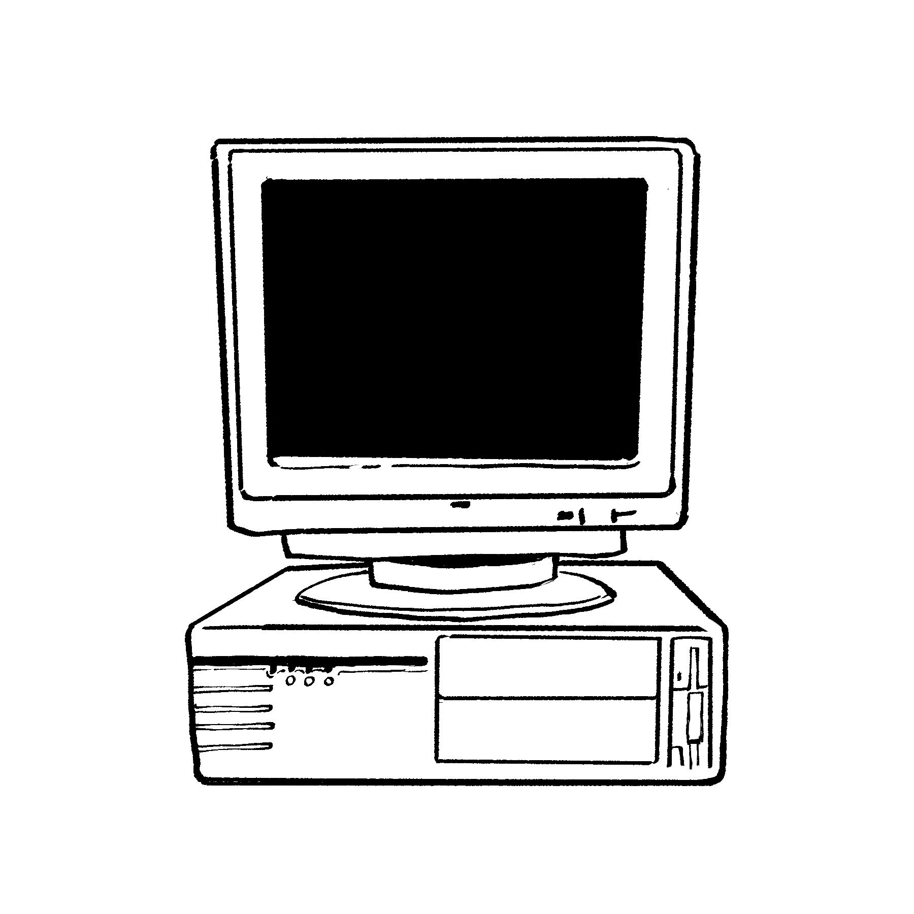
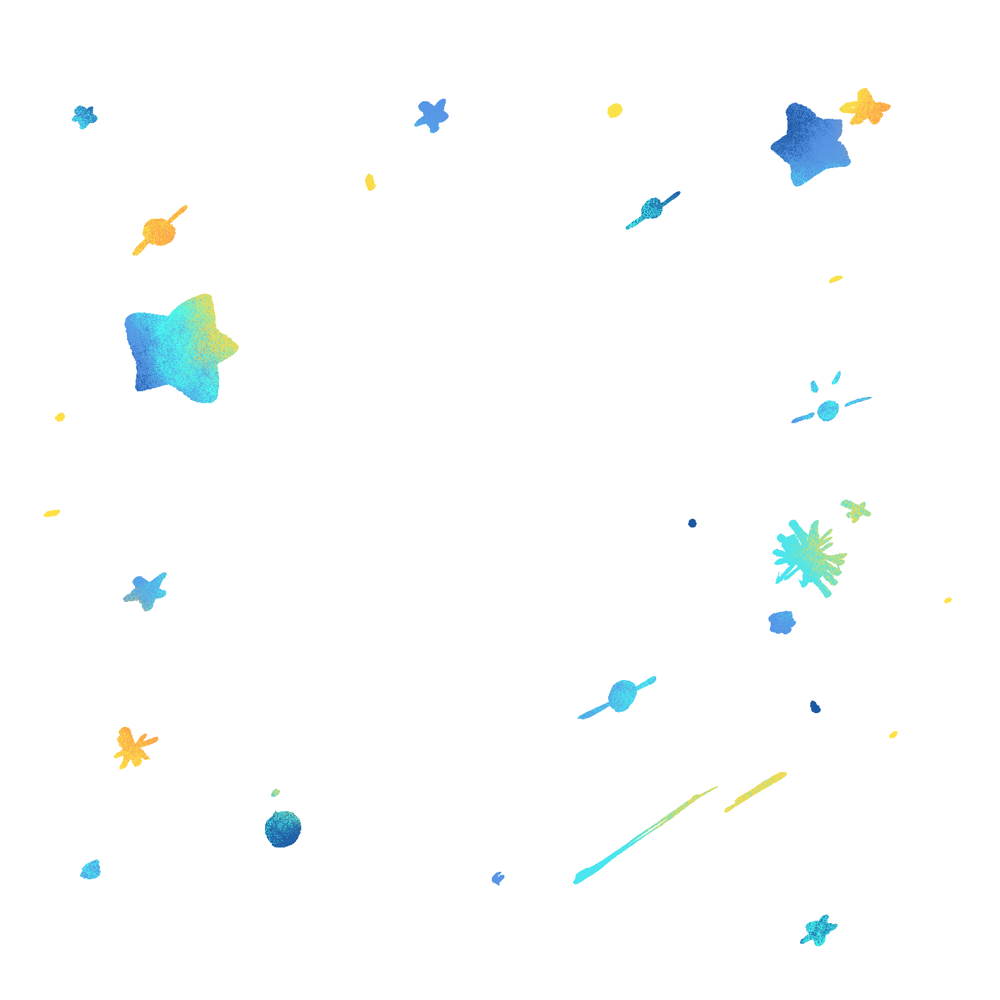
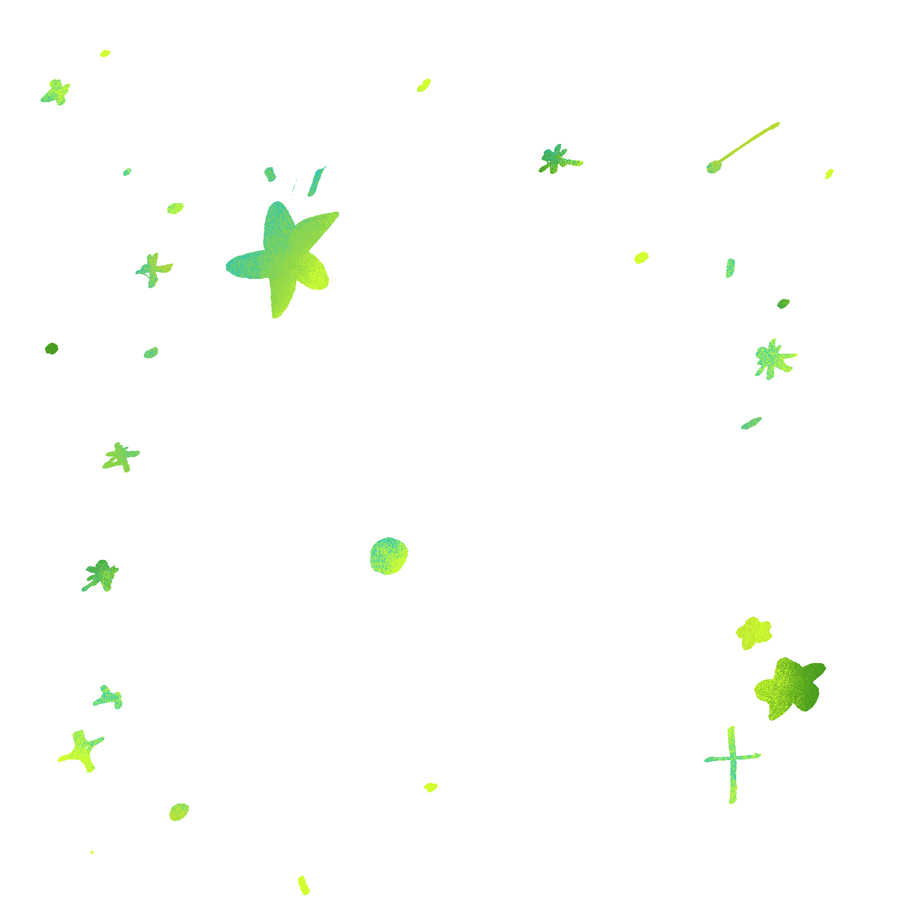
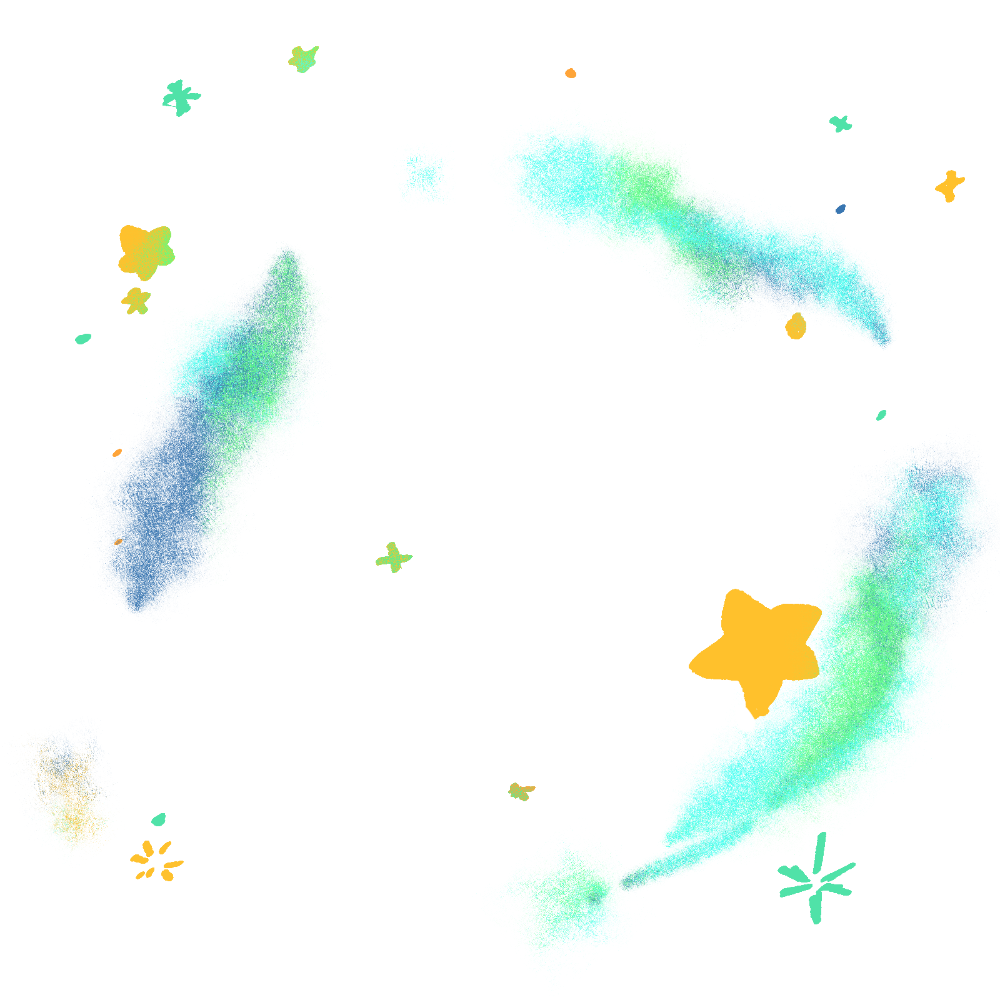
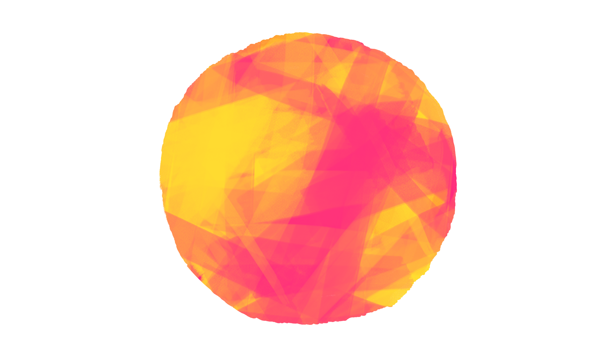

선택에는 '생각'이 담겨있습니다.
우리에게도 당신의 생각이 가장 중요합니다.
그렇다고 생각을 두려워해서는 안 됩니다.
계속 고민하고, 결과는 받아들이면 그만입니다.

이건 지구와는 상관없는 아주 먼 행성의 일 입니다.
그저 지구와 환경이 비슷한 게 전부입니다.




당신은 모든 것을
결정 할 수 있습니다.
인류들이 결정하지 못한
문제의 이야기를 들어주고
그저 선택하기만 하면 됩니다.
어떤 선택을 하더라도
인류는 알아서 멸망 할 거에요!